03_
ZINES
Jump to section:
01_Chance and choice
02_Ethical narratives
03_Ethics in design
04_Climate crisis
01_CHANCE AND CHOICE
[2022, Semester 2].
This zine used online chance and randomiser tool to generate a theme, scope and colour scheme, and utilised AI generated images from CrAIyon.
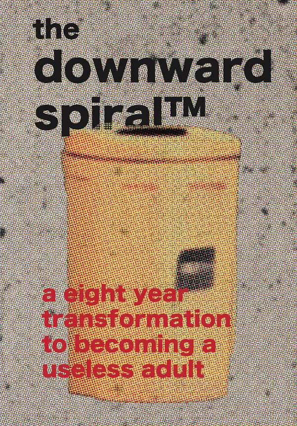

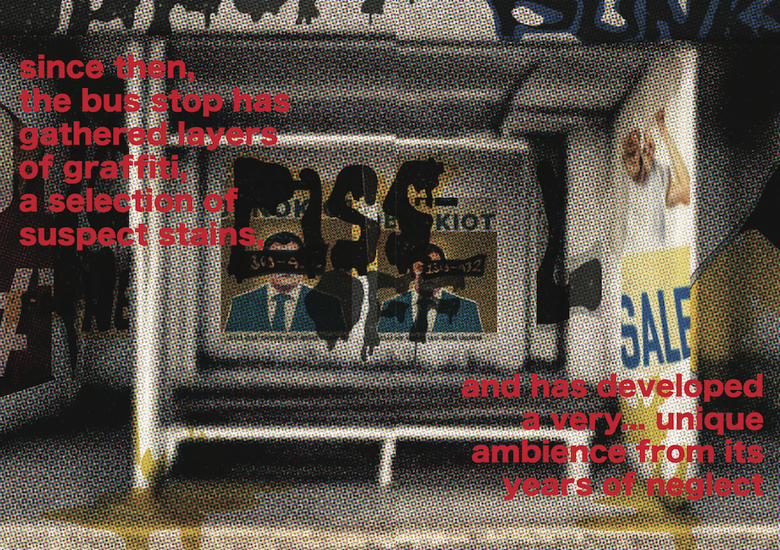
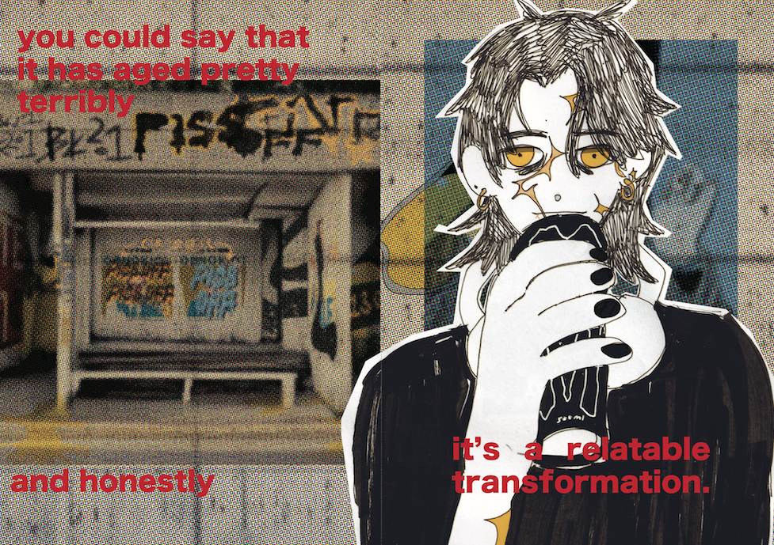
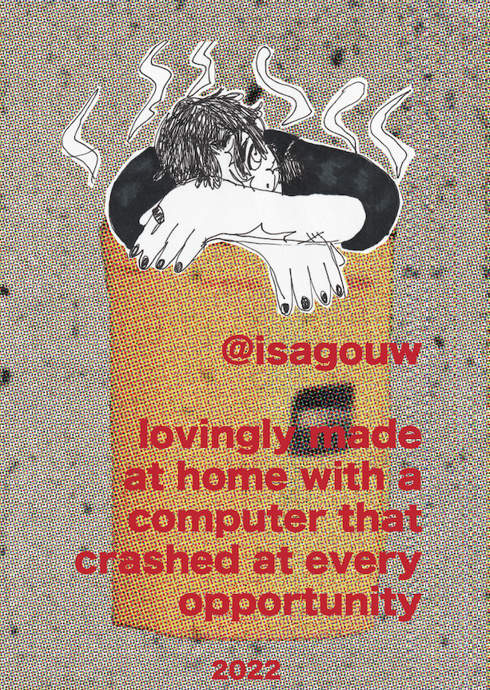
02_ETHICAL NARRATIVES
[2022, Semester 2].
This is a quick response to a short brief about "where you think the world and society is headed".
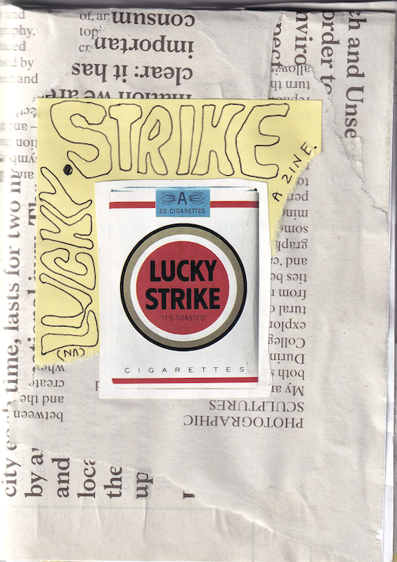
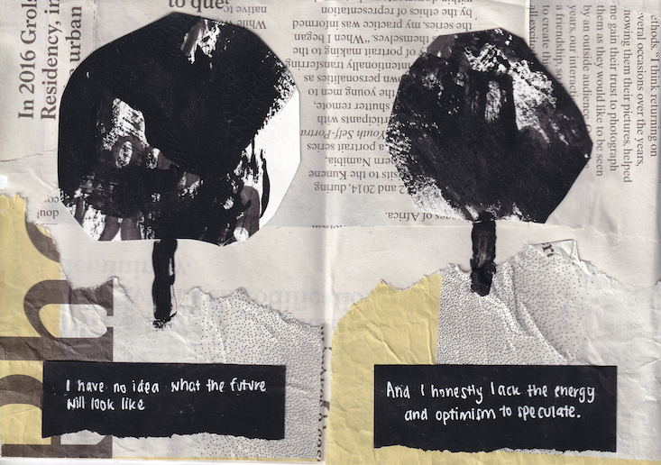
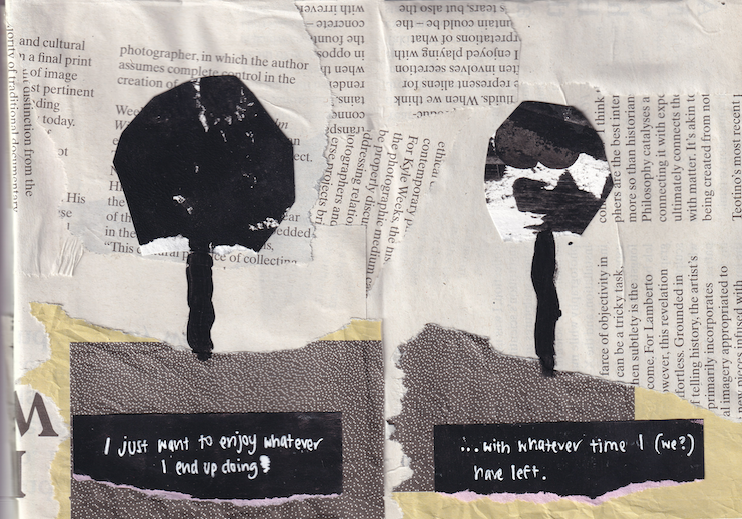
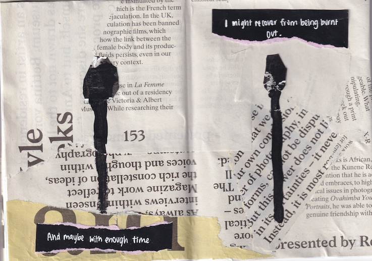
03_ETHICS IN DESIGN
[2022, Semester 2].
This brief asked us to typeset [this article from AIGA] into a zine format.

Front
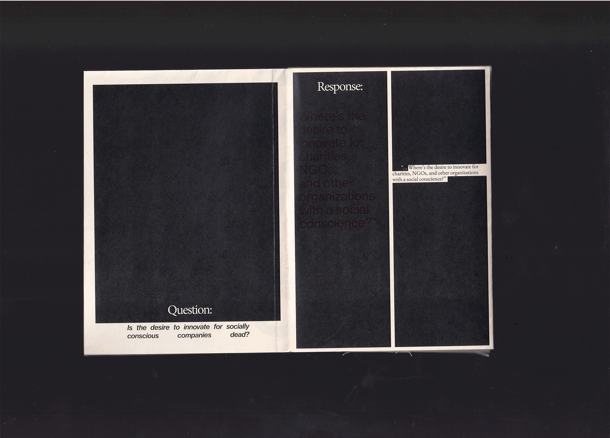
Back
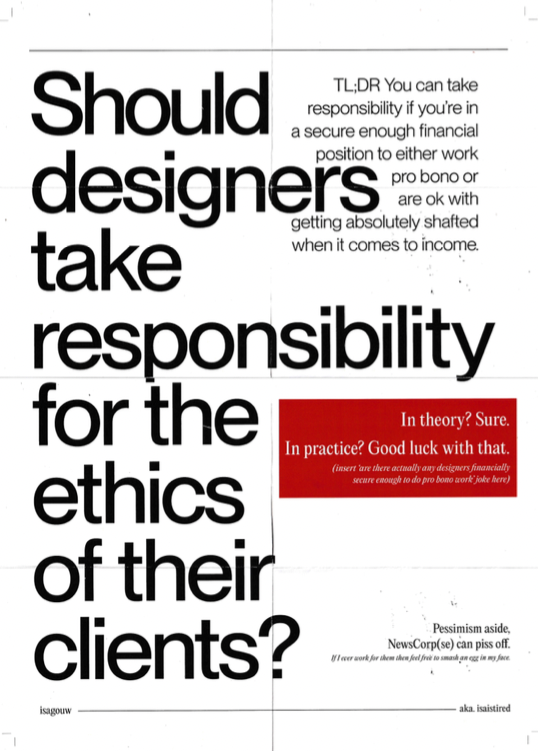
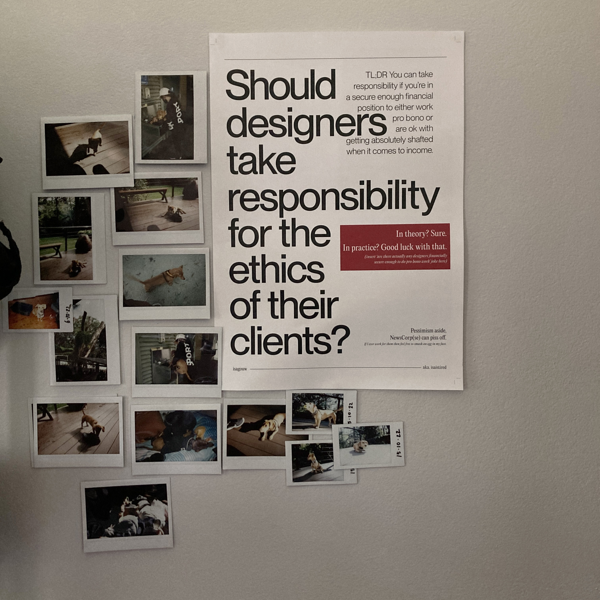
04_CLIMATE CRISIS
[2022, Semester 1].
A zine reponse to what individuals can do (or not do) to help the climate crisis.
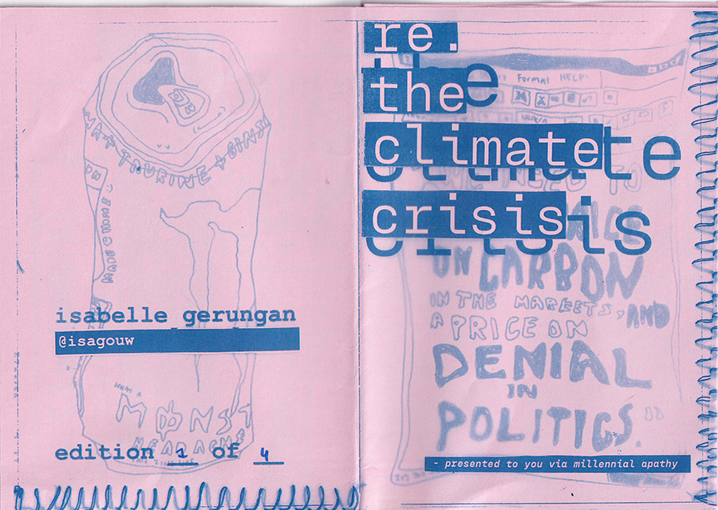
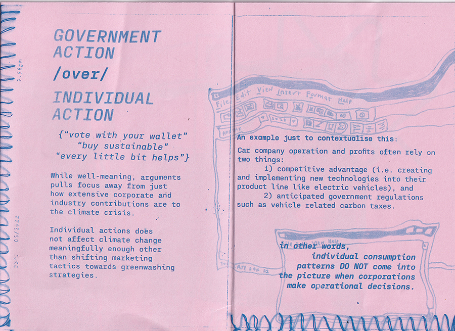
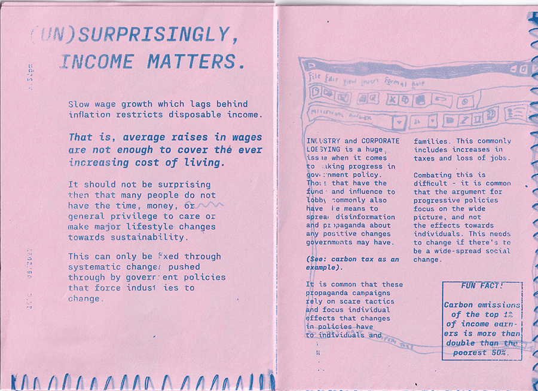
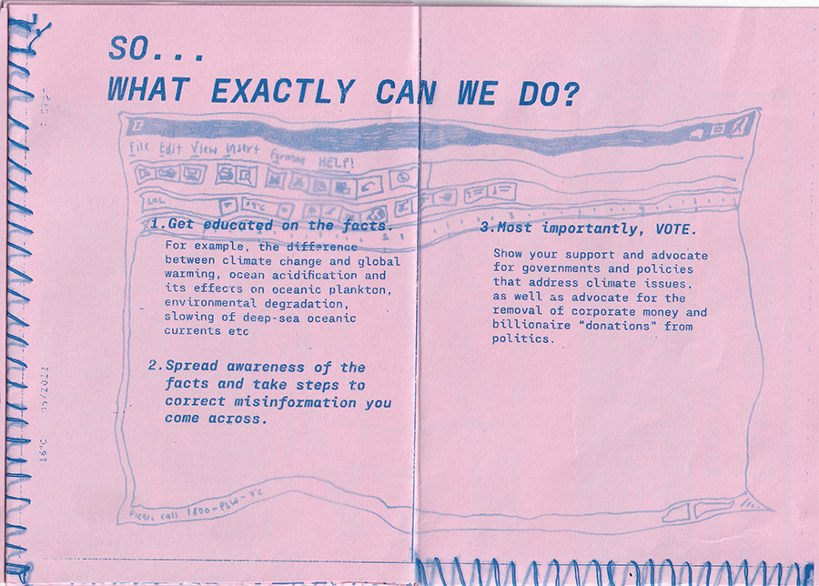
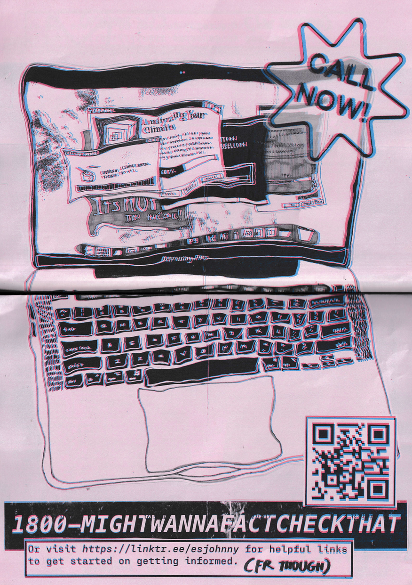